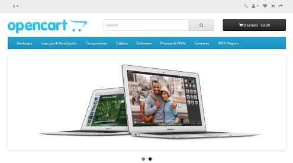
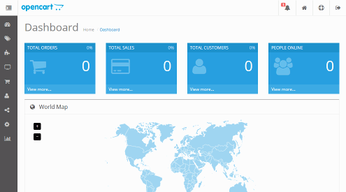

Esta lección es una introducción a la instalación de aplicaciones mediante Docker, utilizando las imágenes proporcionadas por Bitnami. Como es la primera vez que trato en clase el uso de Docker, esta lección tiene un carácter "experimental". Los dos primeros ejercicios están planteados como actividades guiadas, por lo que no se ofrece una página de soluciones. Se pueden consultar las soluciones de los demás ejercicios de Docker (1), aunque se recomienda intentar realizarlos primero sin recurrir a estas soluciones.
En este ejercicio instalaremos Docker en una máquina virtual de Ubuntu 16.04 LTS Server ejecutada en VirtualBox.
Prepare la máquina virtual
Descargue la imagen iso de la versión más reciente de Ubuntu 16.04 LTS Server de 64 bits.
Actualmente (enero de 2017), la última versión disponible de Ubuntu LTS Server es Ubuntu 16.04.1 (21/07/16). página de descarga
Cree una máquina virtual en VirtualBox e instale Ubuntu 16.04 LTS Server.
Para los ejercicios de esta página un disco duro virtual de 8 GB es suficiente, pero para poder instalar más aplicaciones de páginas de ejercicios posteriores se necesitará un disco mayor, por ejemplo de 16 GB.
Compruebe que en la configuración de red de la máquina virtual está conectado a Adaptador puente. Si está conectado a otro tipo de adaptador (probablemente NAT), apague la máquina virtual, cambie a Adaptador puente y reinicie la máquina virtual.
Actualice Ubuntu 16.04 LTS Server:
sudo apt update
sudo apt upgrade
Actualice los repositorios de APT
Arranque la máquina virtual y ejecute los comandos siguientes en un terminal:
Compruebe que puede acceder a OpenCart en el navegador escribiendo la dirección http://AAA.BBB.CCC.DDD, donde AAA.BBB.CCC.DDD es la dirección ip de la máquina virtual:

Compruebe que puede acceder a OpenCart en el navegador escribiendo la dirección http://AAA.BBB.CCC.DDD/admin, donde AAA.BBB.CCC.DDD es la dirección ip de la máquina virtual. El usuario administrador de OpenCart es user con contraseña bitnami1:

Docker (1) 3 - Probar los comandos de Docker
En este ejercicio se trabaja con el OpenCart instalado en el ejercicio anterior.
Puede consultar la Docker Cheat Sheet para obtener información sobre los comandos básicos de Docker.
Detener y poner en marcha
Modifique la tienda OpenCart eliminando alguna categoría del menú principal.
Detenga y reinice el contenedor y compruebe que la tienda conserva los cambios. Los comandos que se deben utilizar son:
Para ver los contenedores existentes (en marcha o detenidos):
sudo docker ps -a
Para detener un contenedor:
sudo docker stop CONTENEDOR
Para poner en marcha un contenedor detenido:
sudo docker start CONTENEDOR
Detenga y borre el contenedor. Cree un nuevo contendor y compruebe que los cambios se han perdido. Los comandos que se deben utilizar son:
Para borrar un contenedor (debe estar detenido primero):
sudo docker rm CONTENEDOR
Nota: La base de datos no se ha borrado, así que se podría cambiar el usuario y contraseña de la tienda para usar la antigua base de datos y recuperar la tienda antigua.
Cambio de IP
Si cambiara la IP de la máquina virtual, OpenCart dejaría de funciona correctamente porque en los archivos de configuración de OpenCart se guarda la URL de OpenCart. En clase esto ocurre de vez en cuando, ya que el router de aula está continuamente asignando direcciones. En casa puede ocurrir más raramente.
Apague y reinicie la máquina virtual.
Si cambia la IP de la máquina virtual, compruebe que la tienda OpenCart ya no se ve correctamente
Si no cambia la IP de la máquina virtual, haga el ejercicio sin cambiar la IP, pero así sabrá cómo hacerlo si algún día cambia la IP.
Corrija los archivos de configuración de OpenCart con la nueva IP.
La forma más fácil es copiar los archivos de configuración de la imagen al servidor, modificarlos y volverlos a copiar a la imagen
sudo docker cp CONTENEDOR:ORIGEN DESTINO
Para averiguar el directorio del sistema de ficheros del contenedor en el que se encuentra opencart, puede abrir una sesión en la imagen y buscarlo:
sudo docker exec -it CONTENEDOR /bin/bash
Ayuda
Los ficheros de configuración están en /bitnami/opencart/config.php y /bitnami/opencart/admin/config.php. Los ficheros se pueden copiar en cualquier carpeta fuera del contenedor. Por ejemplo,
Compruebe que la tienda OpenCart vuelve a verse correctamente.
Docker (1) 4 - Instalar phpMyAdmin
En este ejercicio se pide instalar phpMyAdmin en un contenedor Docker.
Visite el repositorio de phpMyAdmin de Bitnami en GitHub.
En la página principal se indica la orden para crear un contenedor de phpMyAdmin, pero con persistencia. En vez de eso, escriba una orden similar a la del ejercicio 2 que ejecutaba una imagen de OpenCart. Deberá utilizar la IP de la máquina virtual y otro puerto.
Compruebe que puede ver la página inicial de conexión de phpMyAdmin en el navegador escribiendo la dirección http://AAA.BBB.CCC.DDD:PUERTO, donde AAA.BBB.CCC.DDD es la dirección ip de la máquina virtual y PUERTO es el puerto elegido.
Averigüe la contraseña del usuario de OpenCart y entre con phpMyAdmin para ver la base de datos
Docker (1) 5 - Instalar dos aplicaciones (OPTATIVO)
En este ejercicio se pide instalar phpMyAdmin y OpenCart en el mismo servidor, como en el ejercicio anterior, pero con el objetivo de hacerlo accesibles mediante las URLs http://AAA.BBB.CCC.DDD/phpmyadmin y http://AAA.BBB.CCC.DDD/opencart. Eso se puede hacer creando contenedores a los que se acceda por puertos distintos al 80 y creando un contenedor que actue de proxy inverso en el puerto 80 y reenvie la peticiones a cada contenedor.
Cree un contenedor de phpMyAdmin que escuche en un puerto distinto del puerto 80.
Compruebe que puede acceder a phpMyAdmin desde el host.
Cree un contenedor de OpenCart que escuche en un puerto distinto del puerto 80 y distinto del puerto de phpMyAdmin.
Compruebe que puede acceder a OpenCart desde el host.
Cree un contenedor del proxy inverso nginx (imagen de nginx de Bitnami) y configúrelo para funcionar como proxy inverso de manera que /phpmyadmin y /opencart redirijan a los puertos de cada aplicación.
Este apartado no he llegado a hacerlo, se supone que es posible hacerlo
 Este apartado no he llegado a hacerlo, se supone que es posible hacerlo
Este apartado no he llegado a hacerlo, se supone que es posible hacerlo